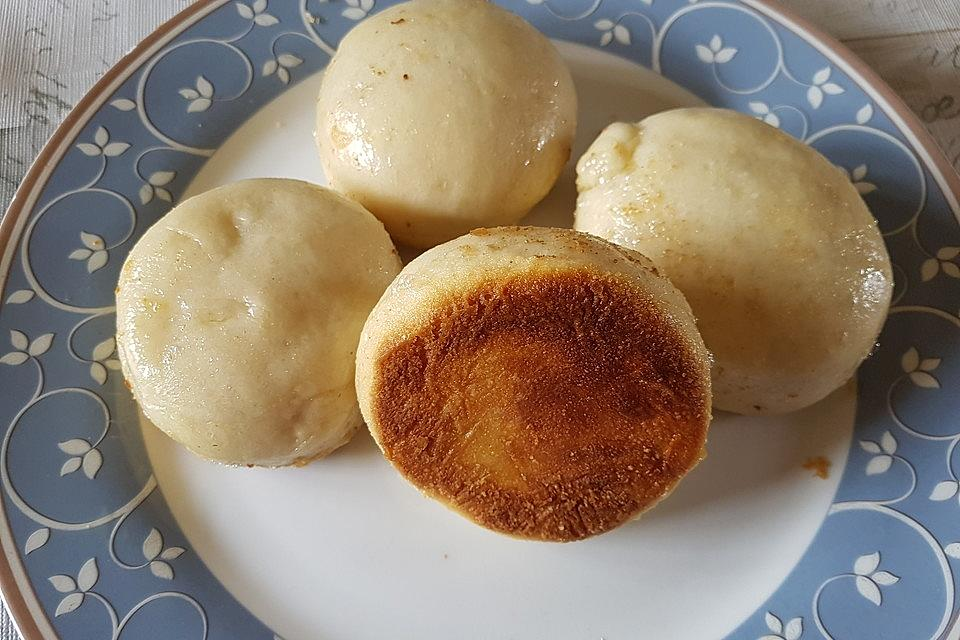

Salty Steamded Dumplings

Ingredients
750 grams of flour
470 ml whole milk
30 g yeast, fresh
18 grams of salt
6 tablespoons oil, neutral (e.g. sunflower oil)
260ml water
2 tsp salt
Steps
Do all the stuff.
Make some nice sauce.
Yeah!
Back